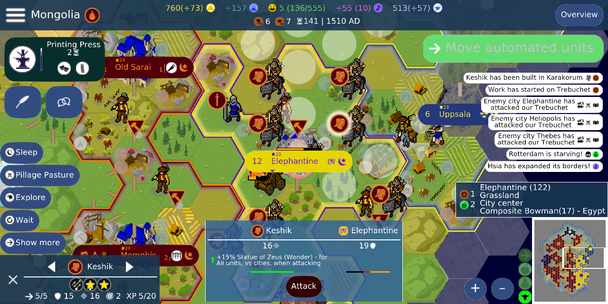
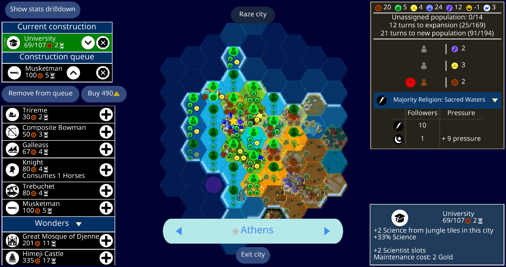
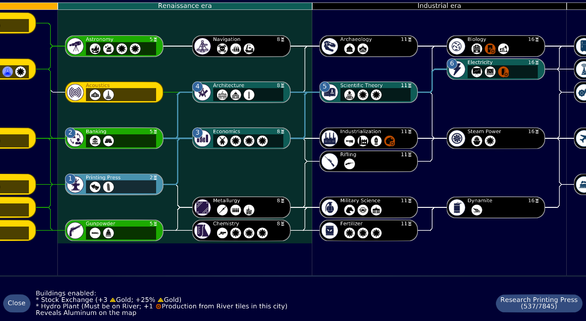
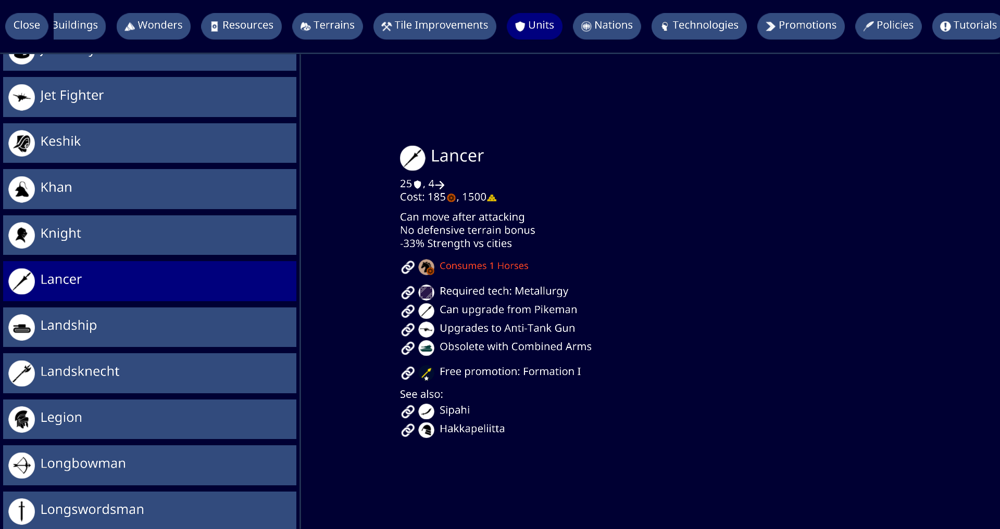

What the game is
A 4X game: explore, expand, exploit resources, and fight or negotiate with rival civilizations. It is not flashy, but it is deep and runs on modest devices.
A fast, open-source 4X strategy game inspired by Civilization V: explore a map, found cities, research technologies, build armies, negotiate, and try to outlast everyone else. LAN Arcade stores the multiplayer turn server and the client installers locally.
Choose Unciv when you want a longer strategy session with diplomacy, research, city planning, and wars that can play out over an evening or across several days.
A 4X game: explore, expand, exploit resources, and fight or negotiate with rival civilizations. It is not flashy, but it is deep and runs on modest devices.
The arcade box stores multiplayer turn files locally and keeps the official client downloads on the LAN, so players can install and connect without internet access.
Install a native Unciv client from the local downloads below, then point multiplayer settings at http://192.168.1.106:8090.
Official Unciv 4.20.13 release files are cached on GannanNet. These links are local LAN downloads, not internet links.
For phones and tablets. Android may ask you to allow installing local APK files.
Download APKBest default for Windows laptops and desktops.
Download MSIUse this if you do not want an installer. Extract the ZIP and run Unciv from the folder.
Download ZIPFor 64-bit Linux desktops. Extract the ZIP and run the bundled desktop build.
Download Linux ZIPCross-platform fallback for devices with a suitable Java runtime already installed.
Download JAROpen the local download shelf for the server JAR, Linux helper files, manifest, and SHA256 checksums.
Open download shelfThese are official Unciv project screenshots cached locally for offline browsing.




Use this when the server is running on the VM or when the same setup is moved to the camping Pi.
Options -> Multiplayer.http://192.168.1.106:8090.Check connection to server. Success means the client can reach LAN Arcade.Multiplayer -> Copy user ID.Online multiplayer.Multiplayer -> Add multiplayer game and paste that game ID.Unciv rewards planning more than reflexes. A good first game is small map, low difficulty, no mods, and only a few human players while everyone learns the flow. The in-game Civilopedia is the main offline gameplay reference once the client is installed.
Move scouts early. Find ruins, city spots, luxury resources, and nearby rivals before committing to wars or wonders.
Food grows population, production builds units and buildings, gold pays upkeep, and science unlocks stronger options.
Pick technologies that match your terrain and threat level. Economic techs feel slow but often win long games.
A small army near your borders discourages opportunistic attacks. Roads and ranged units make defense easier.
The built-in Civilopedia covers buildings, resources, units, terrain, concepts, tutorials, and rules inside the game client.
This is the VM-side service state, so you can tell whether the arcade has merely listed the game or actually proven the LAN path.
/isalive, auth registration, upload, download, and wrong-password overwrite rejection all passed on port 8090.
Measured with UNCIV_JAVA_OPTS="-Xms64m -Xmx256m" during the file-loop smoke.
UNCIV_JAVA_OPTS="-Xms64m -Xmx256m" \ docker compose -f deploy/unciv.compose.yml up -d
Most failures are either the service is not running, devices are not on the same LAN, or players entered different server addresses.
Confirm the service is running, use http://192.168.1.106:8090, and make sure the client device is on the same network as GannanNet.
Everyone must use the same multiplayer server address. The host shares a game ID, and other players add that exact game ID.
Try the alternate package for your device: Windows users can use the MSI or ZIP, Android users may need to allow local APK installs, and Linux users can try the ZIP or JAR.